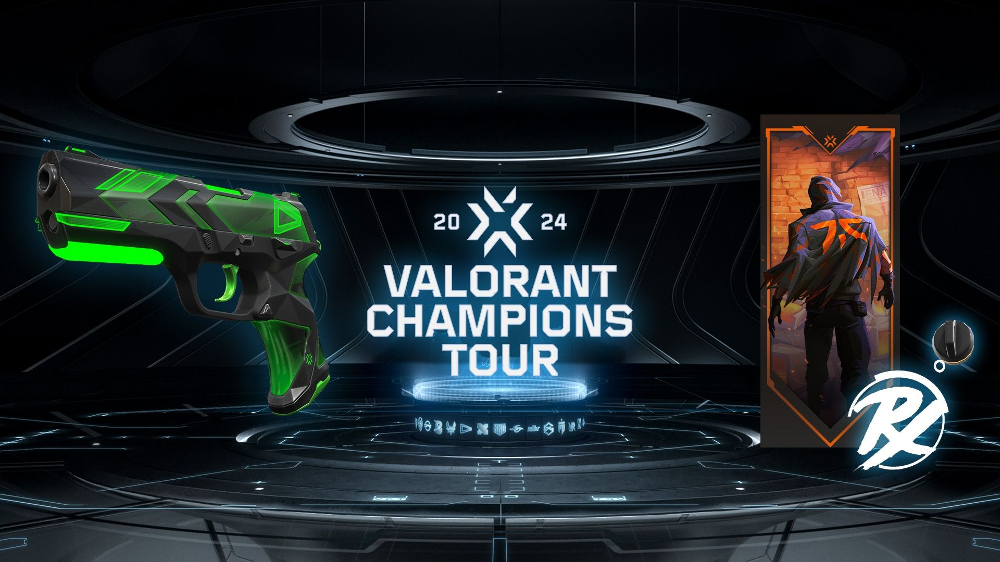
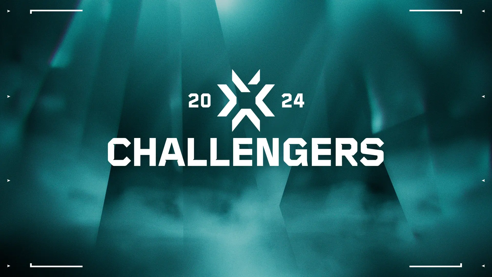

Valorant - informacje o esporcie
Scena e-sportowa:
Valorant Champions Tour (VCT)

Valorant Champions Tour (VCT) to globalny cykl turniejów esportowych, stworzony przez Riot Games, aby wyłonić najlepszych graczy i zespoły na świecie. VCT jest jednym z najbardziej prestiżowych wydarzeń w świecie esportu Valoranta, przyciągającym uwagę milionów fanów na całym świecie.
Struktura VCT:
- Etap Challengers: Rozgrywki regionalne, w których zespoły rywalizują o miejsce w etapie Masters. Każdy region organizuje własne turnieje Challengers, dając lokalnym zespołom szansę na awans.
- Etap Masters: Międzynarodowe turnieje, w których najlepsze zespoły z etapu Challengers walczą o punkty rankingowe i nagrody pieniężne. Turnieje Masters odbywają się kilka razy w roku i stanowią kluczowy element w drodze do mistrzostw świata.
- Champions: Kulminacyjny turniej, który kończy sezon VCT. Najlepsze zespoły z całego świata rywalizują o tytuł mistrza świata Valoranta. To najbardziej prestiżowe wydarzenie w kalendarzu VCT, które przyciąga największą uwagę społeczności.
Znaczenie VCT:
- Globalna rywalizacja: VCT łączy zespoły z różnych regionów, promując globalną rywalizację i umożliwiając graczom z różnych części świata rywalizację na najwyższym poziomie.
- Rozwój sceny esportowej: VCT przyczynia się do rozwoju sceny esportowej Valoranta, tworząc profesjonalne środowisko dla graczy i zespołów oraz przyciągając sponsorów i inwestorów.
- Widowiskowość: Turnieje VCT są transmitowane na żywo, przyciągając miliony widzów na platformach streamingowych. Profesjonalne produkcje, komentarze ekspertów i emocjonujące mecze sprawiają, że VCT jest wyjątkowym widowiskiem esportowym.
Valorant Champions Tour to nie tylko seria turniejów, ale także platforma, która kształtuje przyszłość esportu Valoranta, oferując graczom i fanom niezapomniane emocje i najwyższy poziom rywalizacji.
Valorant Challengers

Valorant Challengers to regionalne etapy kwalifikacyjne w ramach Valorant Champions Tour (VCT), które mają na celu wyłonienie najlepszych zespołów z każdego regionu. Challengers to pierwszy krok w długiej drodze do mistrzostw świata Valoranta.
Struktura Valorant Challengers:
- Otwarta Kwalifikacja: Turnieje otwarte dla wszystkich zespołów, które chcą rywalizować o miejsce w turniejach głównych. Każdy zespół może zarejestrować się i spróbować swoich sił w kwalifikacjach.
- Turnieje Główne: Zespoły, które przejdą przez otwarte kwalifikacje, rywalizują w turniejach głównych Challengers. Te turnieje mają na celu wyłonienie najlepszych zespołów z regionu, które awansują do etapu Masters.
- Punkty Rankingowe: Zespoły zdobywają punkty rankingowe na podstawie swoich wyników w turniejach Challengers. Te punkty są kluczowe dla awansu do kolejnych etapów VCT.
Znaczenie Valorant Challengers:
- Lokalna Rywalizacja: Challengers umożliwia zespołom rywalizację na poziomie regionalnym, co sprzyja rozwojowi lokalnych scen esportowych.
- Odkrywanie Talentów: To okazja dla nowych i mniej znanych zespołów oraz graczy, aby zaistnieć na scenie międzynarodowej. Challengers często odkrywa nowe talenty, które później stają się gwiazdami sceny Valoranta.
- Budowanie Społeczności: Organizowanie turniejów regionalnych pomaga w budowaniu społeczności graczy i fanów w różnych częściach świata. To także sposób na zbliżenie fanów do lokalnych zespołów i graczy.
Regiony Valorant Challengers:
- Ameryka Północna
- Europa
- Ameryka Łacińska
- Brazylia
- Azja Południowo-Wschodnia
- Korea
- Japonia
- Oceania
- Bliski Wschód i Afryka Północna
Valorant Challengers to kluczowy element ekosystemu esportowego Valoranta, oferujący zespołom z całego świata szansę na rywalizację na najwyższym poziomie. To pierwszy krok na drodze do globalnej chwały i tytułu mistrza świata Valoranta.